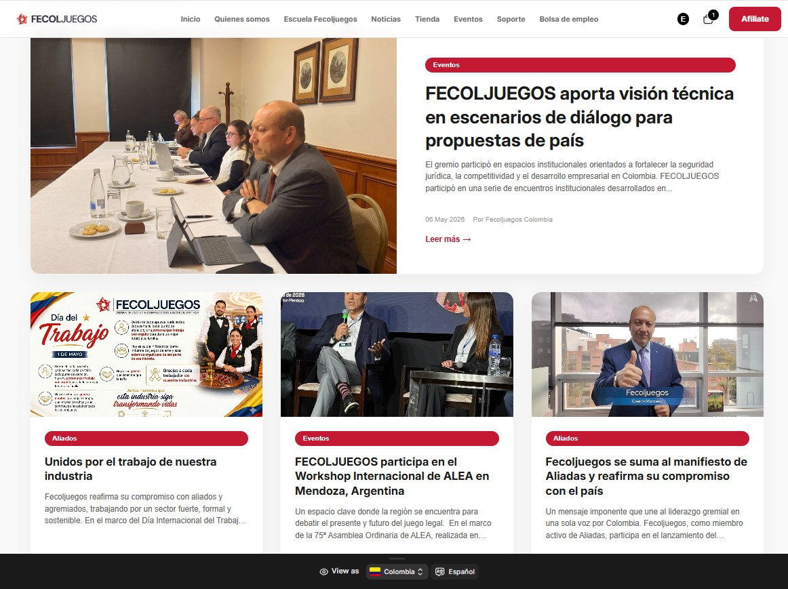
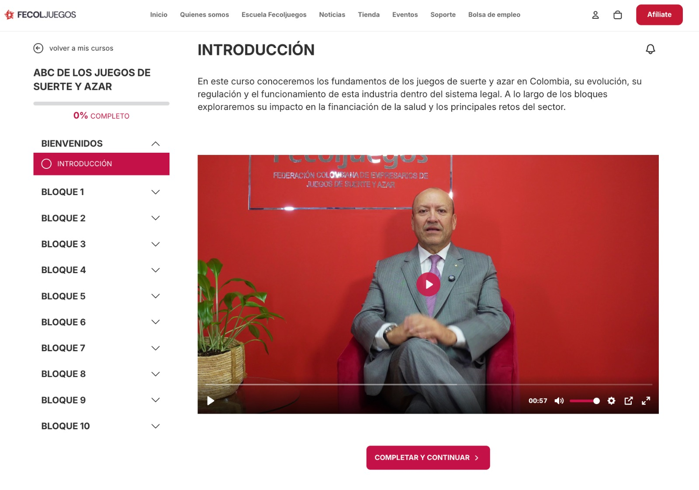
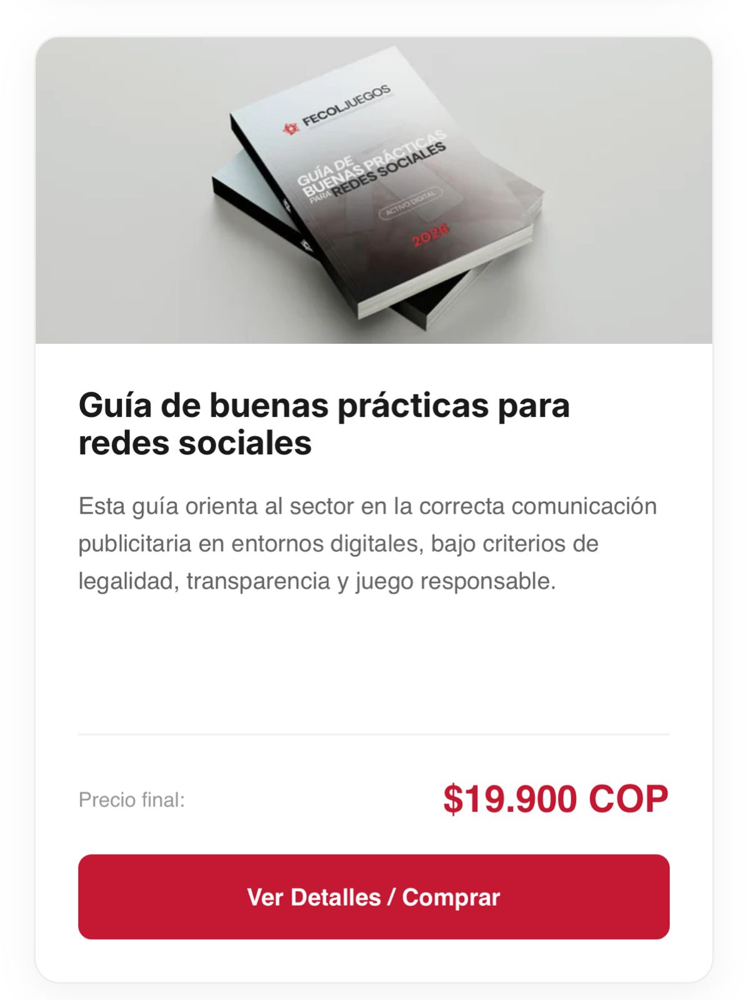
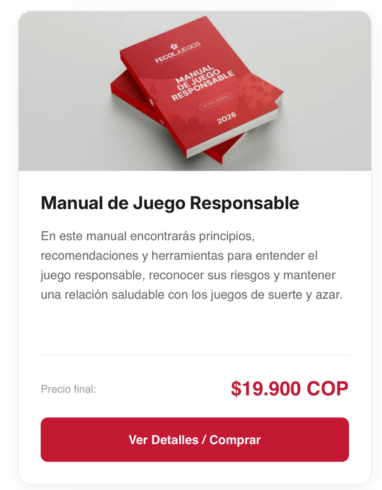

Un reporte detallado de cómo transformamos a Fecoljuegos de un gremio tradicional a una Plataforma de Educación, Comunicación e Innovación monetizable.
Branding & Diseño
Reestructuración de Marca Institucional
Establecimos los cimientos visuales del proyecto. A partir del logo existente, construimos una identidad coherente, moderna y adaptable al entorno digital.
Paleta de Colores: Definición de estandarización cromática (Azul y Rojo corporativos).
Plantillas de Presentación: Kit institucional de 4 plantillas para discursos y corporativo.
Dirección de Arte: Línea gráfica para portadas de cursos, miniaturas y redes.
Para cumplir el objetivo de convertir a Fecoljuegos en un ente con capacidad de venta, migramos la infraestructura de un simple CMS (WordPress) a un orquestador comercial robusto.
Logros Clave
• Estructuración de tienda en línea lista para transaccionar.
• Arquitectura de productos (Cursos, Guías, Eventos).
• Pasarela de pagos integrada para B2C y B2B.
• Catálogo digital auto-administrable.
Soporte & Actualización
Mantenimiento Web y Noticias
Nuestro compromiso no terminó con la construcción de la web. Hemos brindado un servicio continuo de mantenimiento, administración y actualización de contenidos.
Carga de Noticias: Montamos y diagramamos todos los boletines, comunicados y noticias solicitadas por la Federación, manteniéndolos como un referente informativo.
Estabilidad Técnica: Soporte continuo para asegurar que la tienda y el portal institucional operen sin interrupciones.

EdTech
Escuela Fecoljuegos (LMS)
Integración Nativa de Educación
No solo montamos una tienda; integramos un Sistema de Gestión de Aprendizaje (LMS) directamente dentro del ecosistema Shopify. Esto permite vender un curso y que el usuario acceda inmediatamente al aula virtual sin fricciones.
MódulosVideo, Quizzes, Certificados
StatusOperativo 100%

Contenido
Producción de Cursos Oficiales
Conceptualizamos, grabamos y editamos los primeros 4 cursos pilar para la Escuela Fecoljuegos, consolidando a la federación como autoridad educativa.
Desarrollamos documentos técnicos y estratégicos, empacados como productos digitales premium, disponibles actualmente en la sección "Tienda" de la página web. Listos para ser vendidos o usados como "Lead Magnets".

Guía de Buenas Prácticas
Documento normativo e instructivo de alto valor para operadores de la industria.
Publicado en Tienda

Manual de Juego Responsable
Estrategias y cumplimiento normativo para el juego responsable en Colombia.
Publicado en Tienda
Estrategia Comercial
Brochure de Espacios Publicitarios
Fecoljuegos como "Media Hub"
Construimos un ecosistema para que Fecoljuegos pase a ser una plataforma de Comunicación, Innovación y Educación. Para monetizarlo, diseñamos un Portafolio Comercial (Brochure) que empaqueta todos estos espacios digitales.
Nota Aclaratoria: Dejamos las herramientas y los "paquetes" listos. Según el acuerdo comercial, la responsabilidad de salir a vender y cerrar los negocios recae sobre Fecoljuegos, mientras Level actúa como brazo operativo.
Usa las flechas o desliza para ver más espacios
WhatsApp Tech
Implementación de Blupit (CRM)
Un Activo Propio de la Federación
Licencia perpetua. Fecoljuegos solo paga servidores.
Desplegamos Blupit, una potente plataforma omnicanal sobre WhatsApp para realizar CRM, gamificación y educación directa al bolsillo de los agremiados y prospectos.
Envíos masivos y segmentados sin depender de correos ignorados.
Gamificación
Dinámicas interactivas (encuestas, pollas) para levantar data cualificada.
Micro-learning
Distribución de contenido educativo (Acuerdos, leyes) directamente en el chat.
Tracción y Data
Impacto de Campañas en Blupit
Activamos a la base de datos (278 usuarios) a través de interacciones directas, logrando extraer insights invaluables sobre sus necesidades reales.
278Mensajes Enviados
Campaña 1
Capacitación Acuerdo 01 (Juegos Instantáneos)
Micro-curso interactivo entregado directamente por WhatsApp a toda la base.
21 personas completaron todo el flujo.
Resultado cualitativo: Estas personas respondieron que están muy interesadas en recibir más información sobre juegos instantáneos.
Campaña 2
Encuesta de Percepción IA
Evaluación del nivel de madurez conceptual en la industria.
79.5%Acierto Global
361Total Respuestas
83.6%Promedio x Pregunta
287Correctas
74Incorrectas
Retención del Embudo de Respuestas
De 278 mensajes enviados, 75 usuarios iniciaron la interacción.
46.6%Retención (P1 a Final)
Mensajes
278 Enviados
P1 (Iniciaron)
75 Usuarios
P2
40
P3 a P5
~37 Promedio
P9 (Final)
35 Completaron
Desempeño por Pregunta y Análisis Cualitativo
P1: Identificar el problema real
45.3%
Ver análisis profundo
Contexto de respuestas: 34 correctas / 41 incorrectas.
Dato Crítico: El dato más relevante es que 40 personas, equivalentes al 53,3%, respondieron que lo primero es contratar un experto.
Interpretación: Esto muestra una percepción común: muchas personas creen que la IA empieza por la tecnología o por el especialista, cuando realmente debería empezar por una pregunta de negocio. La audiencia ve la IA como algo técnico antes que estratégico.
P2: Los datos son la ventaja competitiva
92.5%
Ver análisis profundo
Contexto de respuestas: 37 correctas / 3 incorrectas. Solo 3 personas dijeron que los datos son secundarios y nadie respondió que se pueden comprar después.
Interpretación: Aquí hay una madurez interesante. La mayoría entiende que la IA no es solo "poner ChatGPT" o automatizar tareas, sino que depende directamente de la calidad de la información disponible y propia.
P3: Preparar y capacitar talento
91.9%
Ver análisis profundo
Contexto de respuestas: 34 correctas / 3 incorrectas. Solo 3 personas respondieron "automatizar todo" y nadie respondió "delegar a RRHH".
Interpretación: La audiencia no parece tener una visión reduccionista de la IA como simple sustitución laboral. Entienden que la adopción necesita acompañamiento, formación activa y liderazgo estratégico.
P4: Gobernanza ética desde el inicio
86.1%
Ver análisis profundo
Contexto de respuestas: 31 correctas / 5 incorrectas. 3 personas dijeron que es importante "pero después de experimentar", y 2 dijeron que no es relevante en esta etapa.
Interpretación: Aparece una posible mentalidad riesgosa de "primero innovemos y después regulamos". Esto puede ser peligroso, especialmente en sectores como gaming, datos personales o scoring de usuarios.
P5: Medir ROI es esencial
83.3%
Ver análisis profundo
Contexto de respuestas: 30 correctas / 6 incorrectas. 6 personas dijeron que es importante medir ROI, pero no es lo más urgente.
Interpretación: Hay una tensión entre experimentar e invertir con disciplina. Una parte de la audiencia todavía podría caer en el error de hacer pilotos de IA sin indicadores claros de eficiencia, ahorro o ingresos.
P6: Asegurar rentabilidad y sostenibilidad
85.3%
Ver análisis profundo
Contexto de respuestas: 29 correctas / 5 incorrectas. 3 personas eligieron "eliminar por completo el riesgo del negocio" y 2 "aumentar la suerte para el jugador".
Interpretación: La mayoría entiende bien el concepto, pero algunos todavía asocian incertidumbre con "suerte" o con "eliminar riesgo". En gaming, la idea correcta es diseñar, medir y administrar la incertidumbre.
P7: Entender al jugador y experiencias responsables
94.1%
Ver análisis profundo
Contexto de respuestas: 32 correctas / 2 incorrectas. Fue la pregunta con mejor resultado global.
Interpretación: La audiencia parece entender perfectamente que la fidelización sostenible no se basa en bombardear al usuario, sino en conocerlo, segmentarlo, cuidarlo y diseñar experiencias relevantes.
P8: Procesos ágiles, monitoreo y trazabilidad
91.2%
Ver análisis profundo
Contexto de respuestas: 31 correctas / 3 incorrectas. Solo 3 personas respondieron que hay que tomarse más tiempo para analizar cada decisión.
Interpretación: La audiencia entiende que en una industria de operación permanente (24/7) no basta con planear; se necesita reacción inmediata, alertas en tiempo real y trazabilidad total.
P9: Compliance genera confianza y sostenibilidad
82.9%
Ver análisis profundo
Contexto de respuestas: 29 correctas / 6 incorrectas. 5 personas lo asociaron con reducir costos y evitar sanciones, y 1 como un mero requisito.
Interpretación: La mayoría ya entiende que compliance construye confianza y reputación. Pero todavía hay rezagos de personas que lo asocian exclusivamente con evitar multas o cumplir una obligación regulatoria.
Perfil de Participantes (Muestra Representativa)
18Alta Gerencia
11Gerencia Media
8Coordinación
8Otro
Interpretación Estratégica
El ejercicio muestra una audiencia con buena madurez conceptual frente a IA, datos, liderazgo, operación y compliance. Sin embargo, el principal reto está en cambiar la mentalidad de implementación: la IA no debe empezar por la tecnología ni por el experto, sino por la identificación del problema real del negocio.
Conclusión Estratégica
Estos números demuestran empíricamente que la industria está buscando activamente capacitarse sobre diferentes temas. Cuando se les entrega contenido de valor directamente a su bolsillo (vía Blupit / WhatsApp), responden, interactúan hasta el final y revelan sus intereses comerciales reales.
Formato Media
Producción Audiovisual (Voces del Juego)
Para posicionar a los líderes del gremio, iniciamos la producción de videos de entrevistas cortas y directas, diseñadas para consumo en redes (LinkedIn/Meta).
Videos Grabados y Editados
5
Videos Publicados
2
Videos por Publicar
3
Auditoría
Cumplimiento Contractual (Checklist)
Revisión objetiva de las obligaciones estipuladas en el Contrato de Prestación de Servicios vs. Entregables ejecutados.
Plataforma digital SaaS (Dashboard, CRM, Mensajería)
Completado: Despliegue de Blupit con acceso entregado.
Infraestructura en la nube independiente
Completado: Servidores exclusivos configurados para Fecoljuegos.
Nueva página web con E-commerce e integración LMS
Completado: Migración exitosa de WP a Shopify con LMS integrado.